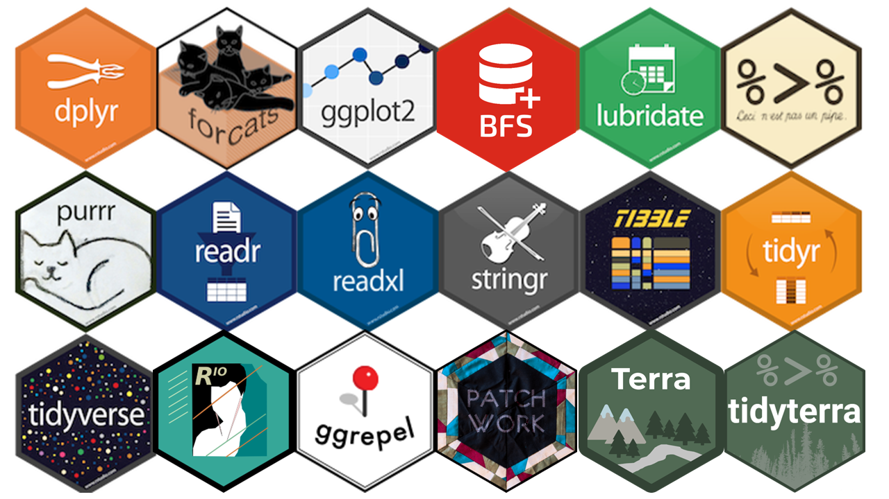
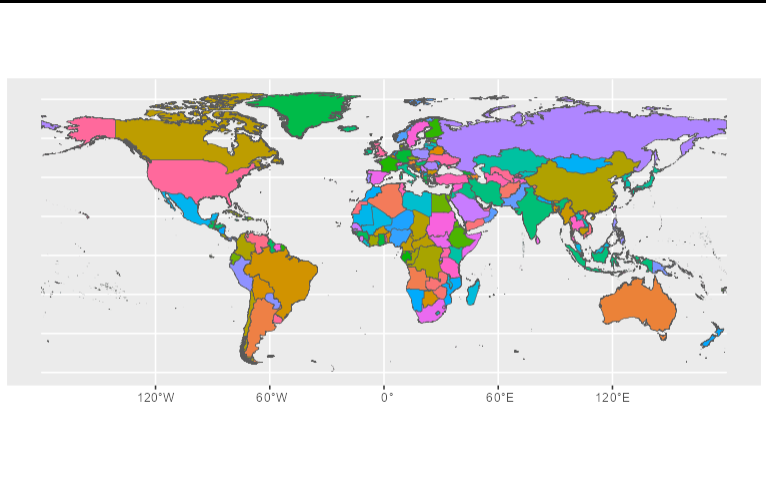
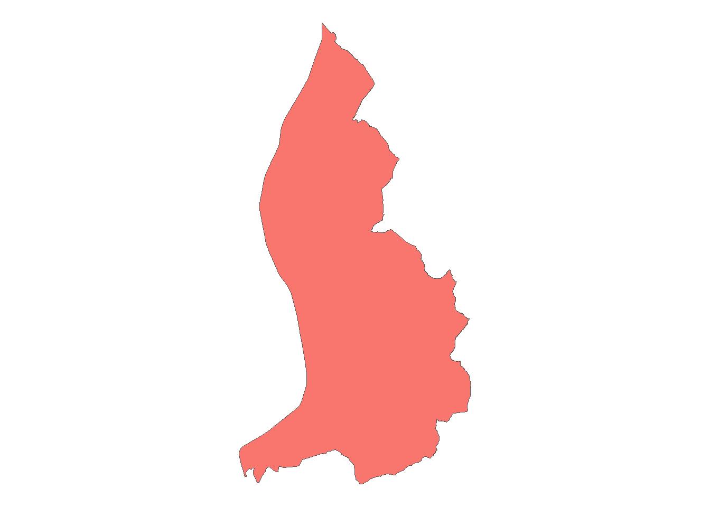
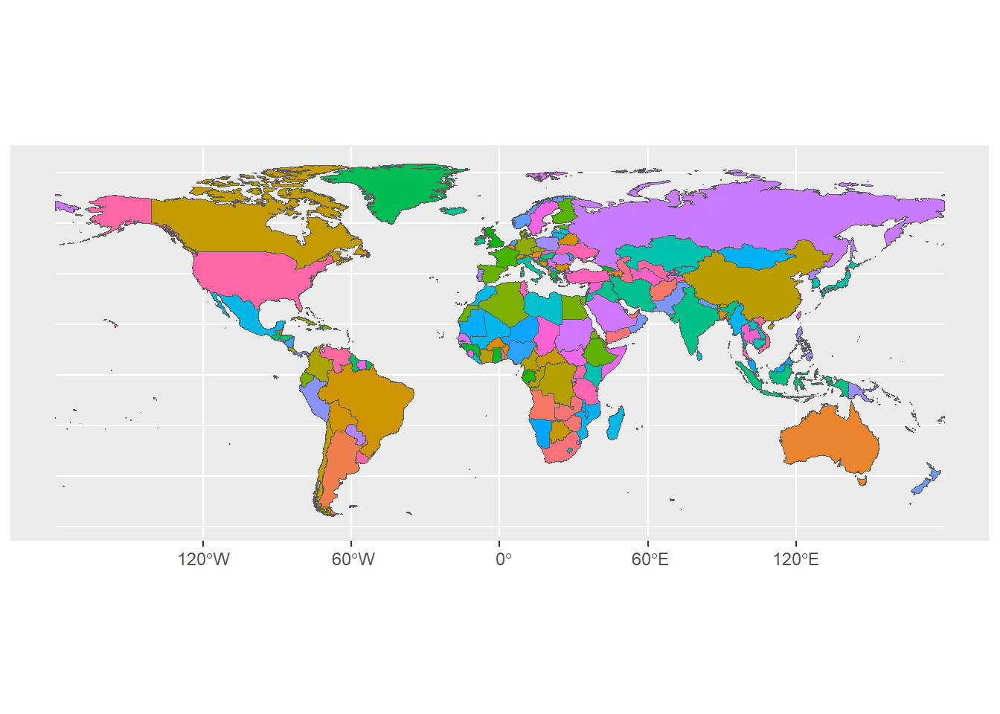
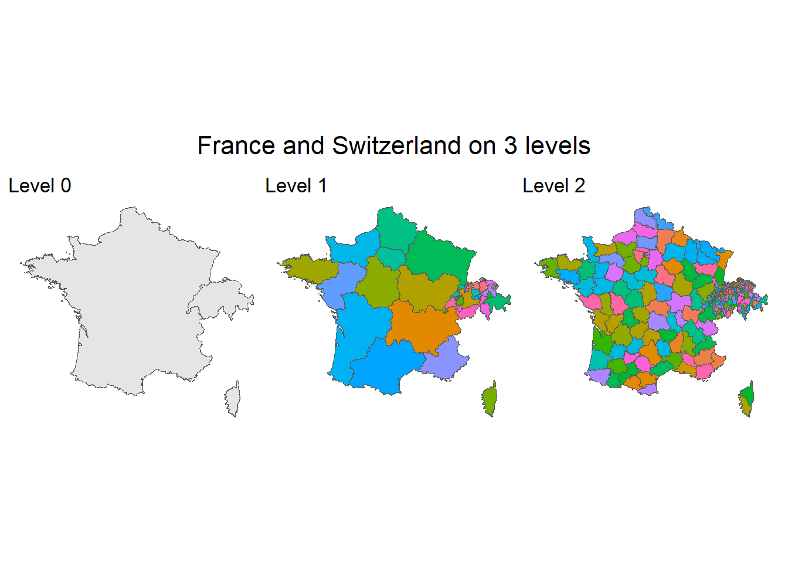

#
# library(terra)
# library(patchwork)
# library(tidyverse)
# library(tidyterra)
# library(here)
# library(countrycode)
# library(rgeoboundaries)
#
# C <- countryname(c("UK"), destination = "iso3c")
#
# P <- vect(
# geoboundaries(
# country = C,
# type = "unsimplified",
# release_type = "gbOpen"
# )
# )
#
# x <- now()
#
# W <- vect(
# geoboundaries(
# adm_lvl = "adm0",
# type = "simplified",
# release_type = "gbAuthoritative",
# quiet = TRUE
# )
# ) |>
# filter(shapeName != "Antarctica")
#
# ggplot() +
# geom_spatvector(
# data = W,
# aes(
# fill = shapeName
# ),
# show.legend = F
# )
# x <- x - now()
#
# y <- now()
# W <- vect(
# geoboundaries(
# adm_lvl = "adm0",
# type = "unsimplified",
# quiet = TRUE
# )
# ) |>
# filter(shapeName != "Antarctica")
#
# ggplot() +
# geom_spatvector(
# data = W,
# aes(
# fill = shapeName
# ),
# show.legend = F
# )
#
# y <- y - now()Overview
1 Packages
1.1 General
In this overview I will use as few packages as possible. I will focus on the terra and tidyterra packages. Some of the discussed maps are Switzerland-centered and stem from the Swiss Federal offices for Statics and for Topography (Swisstopo).

1.2 Packages used in this Overview
| Package | Category | Description |
|---|---|---|
| tidyverse | Data Manipulation | Collection of packages for data manipulation and visualization |
| ggplot2 | Visualization | Grammar of graphics for creating complex, customizable plots |
| terra | Spatial Analysis | Handling of spatial data, successor to raster package |
| tidyterra | Spatial Analysis | Extends terra to work with tidyverse functions |
| patchwork | Visualization | Combines multiple ggplot2 plots into a single figure |
| ggrepel | Visualization | Prevents overlapping of text labels in ggplot2 |
| ggimage | Visualization | Adds images to ggplot2 plots |
| geodata | Spatial Data | Provides access to various geographic datasets |
| basemaps | Mapping | Simplifies the process of adding basemaps to plots |
| countrycode | Data Manipulation | Converts country names and codes |
| here | Project Management | Simplifies file paths in projects |
| BFS | Get Data | Package to allow easy access to Swiss Federal Office for Statistics |
| scales | Format axes |
1.3 Broad overview over the Terra Landscape
The terra package in R, developed by Robert J. Hijmans and released in early 2021, is designed for efficient handling, analysis, and modeling of spatial data, specifically raster data. It is a successor to the widely-used raster package, offering enhanced performance, speed, and memory efficiency.
!
terra provides tools for reading, writing, and manipulating raster data (gridded data such as satellite images or digital elevation models) and supports vector data operations. It can handle large datasets efficiently using multi-threading, allowing for faster computation. The package supports various spatial data formats (like GeoTIFF, NetCDF, and ESRI shapefiles), performs raster algebra, resampling, masking, reclassification, and offers tools for spatial interpolation, map projections, and spatial overlays.
terra seamlessly integrates with other R spatial packages, such as sf for vector data and stars for spatiotemporal data. It Facilitates spatial and environmental modeling, distance calculations, zonal statistics, and machine learning applications involving spatial data.
terra is positioned as a modern, efficient alternative for those working with large-scale spatial data in R, aiming to replace the older raster package with more robust functionality.
1.4 The Basics
1.4.1 Rasters and Vectors
| Aspect | Raster Format | Vector Format |
|---|---|---|
| Definition | Represents spatial data as a grid of cells or pixels, each with a specific value. | Represents spatial data using geometric shapes (points, lines, and polygons) with associated attributes. |
| Data Structure | Grid or matrix of cells. | Coordinates and attributes stored as points, lines, or polygons. |
| Data Type | Continuous data (e.g., elevation, temperature) or categorical (and thus discrete) data (e.g., land cover). | Discrete data (e.g., city locations, road networks, boundaries). |
| Storage Requirements | Generally requires more storage space, especially for high-resolution datasets. | Generally requires less storage space due to more efficient data representation. |
| File Formats | Common formats include GeoTIFF, JPEG, PNG. | Common formats include Shapefile, GeoJSON, KML. |
| Spatial Accuracy | Limited by cell resolution; higher resolution increases accuracy but also file size. | High spatial accuracy, as data is represented by precise coordinates. |
| Analysis Capabilities | Suitable for spatial analysis tasks such as overlay, buffering, and surface analysis (e.g., slope, aspect). | Suitable for network analysis, proximity analysis, and topological operations. |
| Data Representation | Best for representing continuous data (e.g., elevation, temperature) and large areas. | Best for representing discrete features (e.g., roads, buildings, rivers) with clear boundaries. |
| Visualization | Can appear pixelated when zoomed in, depending on resolution. | Maintains clarity and detail at any zoom level. |
| Editing and Updating | Difficult to edit individual cells; often requires specialized software. | Easier to edit and update specific features or attributes. |
| Processing Speed | Generally slower for processing large datasets, especially at high resolutions. | Generally faster for processing operations that involve specific features. |
| Scalability | Not easily scalable; requires resampling to change resolution, which may lead to data loss. | Easily scalable; geometric features maintain integrity at different scales. |
| Examples of Use Cases | Environmental modeling, satellite imagery, land use/land cover mapping. | Mapping of transportation networks, property boundaries, and infrastructure management. |
For the Swiss Maps of BFS The BFS+ - Package will be used for convenience. This makes sure that the most recent map data is used (see SpatVector).
2 Get Maps
2.1 Maps using rgeoboundaries
For World Maps the rgeoboundaries Package is a helpful package to load data from [https://www.geoboundaries.org/api.html|geoboundaries]. World maps as well as countrymaps can be downloaded via the geoboundaries API.
2.1.1 World Maps

It takes 32 seconds to generate this Map using geoboundaries and 24 seconds when the “simplified” maps of geoboundaries are used.
2.1.2 Draw Map of Single Country using geoboundaries
library(rgeoboundaries)
P <- vect(
geoboundaries(
country = "Liechtenstein",
type = "unsimplified",
release_type = "gbOpen"
)
)
ggplot() +
geom_spatvector(
data = P,
aes(
fill = shapeName
),
show.legend = F
) +
theme_void()
2.2 Using geodata
Using geodata insted of rnaturalearth is much quicker.
2.2.1 World Map
b <- now()
a <- world(path = tempdir(), resolution = 5, level = 0, version = "latest") |>
filter(GID_0 != "ATA")
ggplot() +
geom_spatvector(
data = a,
aes(fill = GID_0),
show.legend = F
)
b <- b - now()The generation of a world map takes 2.7 seconds.
2.2.2 Plotting France
2.3 Get the Country Name
Tip
countrycode::codelist
This function shows an exhaustive list of all countries in all formats / languages accessible by countrycode. The resulting tibble looks like this:
# A tibble: 291 × 624
# ar5 cctld continent country.name.de country.name.de.regex country.name.en country.name.en.regex
# <chr> <chr> <chr> <chr> <chr> <chr> <chr>
# 1 ASIA .af Asia Afghanistan afghan Afghanistan afghan
# 2 EIT .al Europe Albanien albanien Albania albaniaThe different countrynames and codes can be transformed using countrycode
| Argument | Description |
|---|---|
| sourcevar | Vector which contains the codes or country names to be converted (character or factor) |
| origin | A string which identifies the coding scheme of origin (e.g., “iso3c”). See codelist for a list of available codes |
| destination | A string or vector of strings which identify the coding scheme of destination (e.g., “iso3c” or c(“cowc”, “iso3c”)). See codelist for a list of available codes. When users supply a vector of destination codes, they are used sequentially to fill in missing values not covered by the previous destination code in the vector |
| warn | Prints unique elements from sourcevar for which no match was found |
| nomatch | When countrycode fails to find a match for the code of origin, it fills-in the destination vector with nomatch. The default behavior is to fill non-matching codes with NA. If nomatch = NULL, countrycode tries to use the origin vector to fill-in missing values in the destination vector. nomatch must be either NULL, of length 1, or of the same length as sourcevar |
| custom_dict | A data frame which supplies a new dictionary to replace the built-in country code dictionary. Each column contains a different code and must include no duplicates. The data frame format should resemble codelist. Users can pre-assign attributes to this custom dictionary to affect behavior |
| custom_match | A named vector which supplies custom origin and destination matches that will supercede any matching default result. The name of each element will be used as the origin code, and the value of each element will be used as the destination code |
| origin_regex | NULL or Logical: When using a custom dictionary, if TRUE then the origin codes will be matched as regex, if FALSE they will be matched exactly. When NULL, countrycode will behave as TRUE if the origin name is in the custom_dictionary’s origin_regex attribute, and FALSE otherwise |
2.4 Get the Map Data
Here the geodata::gadm function is used. It fetches administrative boundaries for any country in the world. Data are read from files that are downloaded if necessary. The following Arguments are possible / necessary: country (mandatory character variable). Three-letter ISO code or full country name. multiple names will all be downloaded and rbind-ed together.
gadm(country, level=1, path, version="latest", resolution=1, ...)
| Argument | Type | Description |
|---|---|---|
| country | character | Three-letter ISO code or full country name. Multiple names can be provided; they will be downloaded and combined using rbind |
| level | numeric | The level of administrative subdivision requested. 0 for country, 1 for first level of subdivision, and so on |
| path | character | Path for storing the downloaded data. Refers to geodata_path |
| version | character | Either “latest” or a specific GADM version number (e.g., “3.6”, “4.0”, or “4.1”) |
| resolution | integer | Level of detail (only for version 4.1). Should be either 1 (high) or 2 (low) |
Overseas territories are typically not included under the main country code “(e.g. FRA” for France) in the GADM database. You need to add them separately if you want to visualize them on a map (see comments in code below).
P <- gadm(
country = c("FRA","CHE"), # Include Overseas territories manually by adding
level = 1, # c("GLP", "MTQ", "GUF", "REU", "MYT"),
path = tempdir()
)
P <- ggplot() +
geom_spatvector(
data = P,
aes(
fill = NAME_1
),
show.legend = F
) +
theme_void() +
ggtitle("Level 1")
Q <- gadm(
country = c("France","CHE"),
level = 0,
path = tempdir()
)
Q <- ggplot() +
geom_spatvector(
data = Q
) +
theme_void() +
ggtitle("Level 0")
R <- gadm(
country = c("FRA","Switzerland"),
level = 2,
path = tempdir()
)
R <- ggplot() +
geom_spatvector(
data = R,
aes(
fill = NAME_2
),
show.legend = F
) +
theme_void() +
ggtitle("Level 2")
(Q | P | R) +
plot_annotation(
title = "France and Switzerland on 3 levels",
theme = theme(plot.title = element_text(hjust = 0.5, size = 16)))